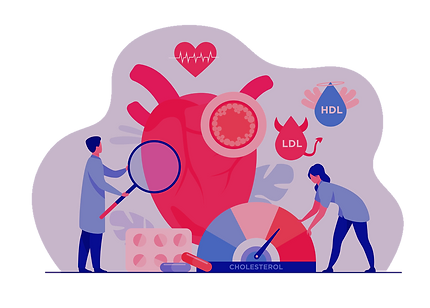

Root Cause Analysis
Addressing the Root Cause of a Disease is the most crucial step towards attaining Disease Prevention. This is because all diseases are borne in the mind and further progress into the Body through various stages. The Root cause of any Disease is almost and invariably a very low vibratory Emotional state as Measured over The Human Vibratory Emotional Scale. A deep seated Emotion, lodged within the Depths of the Subconscious mind , collectively addressed as Trapped Emotions.
Disease Stage Mapping
Addressing the Root Cause of a Disease is the most crucial step towards attaining Disease Prevention. This is because all diseases are borne in the mind and further progress into the Body through various stages. The Root cause of any Disease is almost and invariably a very low vibratory Emotional state as Measured over The Human Vibratory Emotional Scale. A deep seated Emotion, lodged within the Depths of the Subconscious mind , collectively addressed as Trapped Emotions
Immunity Score
In the Human Body, the Immune system is represented by a few Organs & Frequencies. Jv-scan measures the working Frequencies of these Organs to give you a Comprehensive Immune status Scoring using a Unique Algorithm, so that you take action in Right Time to keep away from any Measure of Ill health.
Organ risk calculation
 For the First time ever, using a Diagnosis tool to predict Organ Risk Calculation-an era of Preventive Diagnosis. This is based on the calculation of your Normal Frequencies and Comparing it with the Working Frequencies of an Organ to give you Precisely the Low vibratory states at the Level of your Organs and Systems. An era of Preventive Diagnosis so you stay Hail, Hearty and Healthy.
Biomarkers of ill health
.webp) Mapping of different Biomarkers of ill health was never so easy before.
Our unique AI Algorithm maps up different biomarkers of good and ill health and categorizes them
further into various categories to give you an overall score for your Blood Profile- The
Cellular
score.
Mapping of different Biomarkers of ill health was never so easy before.
Our unique AI Algorithm maps up different biomarkers of good and ill health and categorizes them
further into various categories to give you an overall score for your Blood Profile- The
Cellular
score.